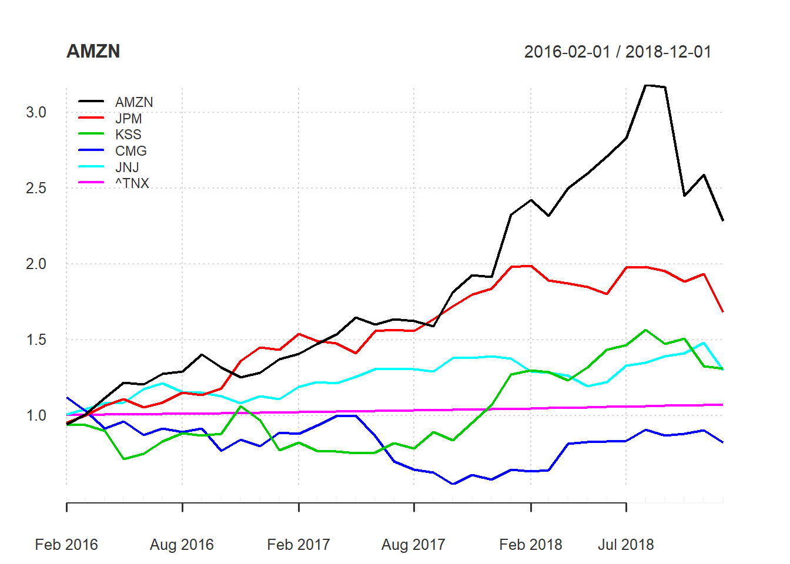
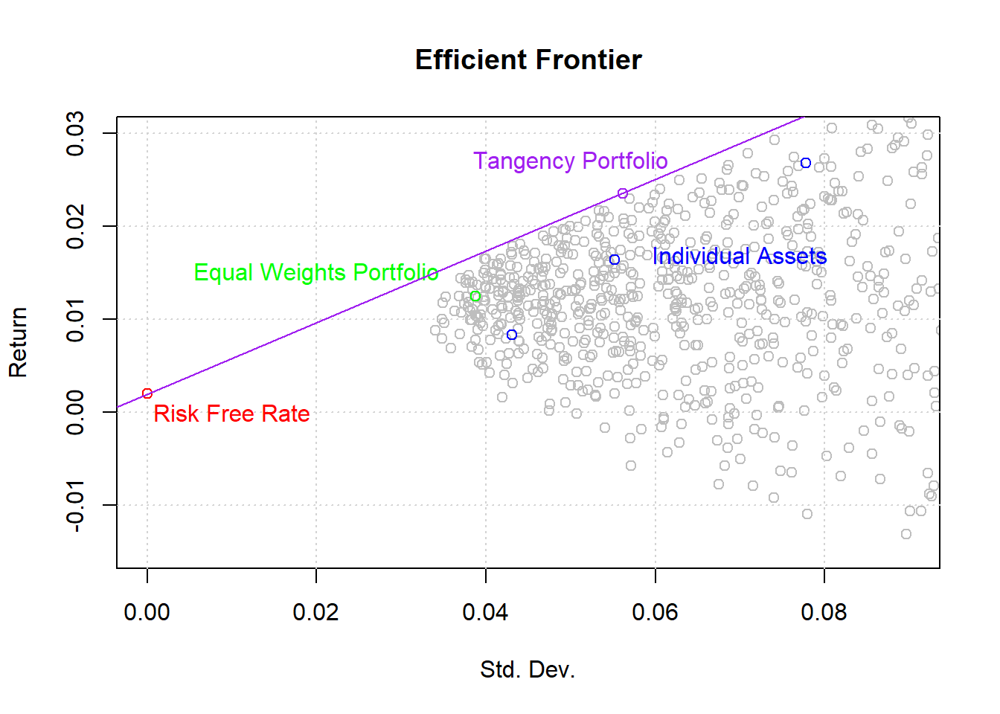
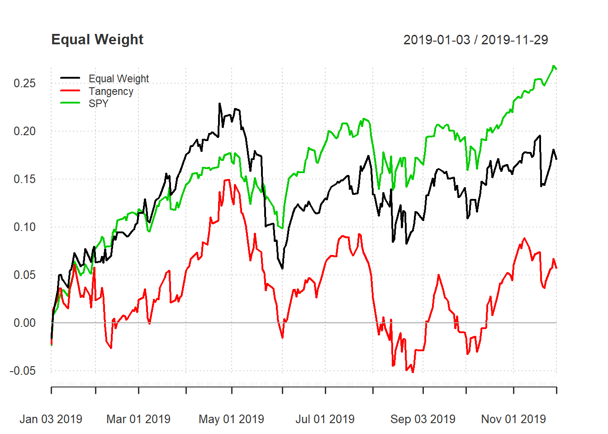
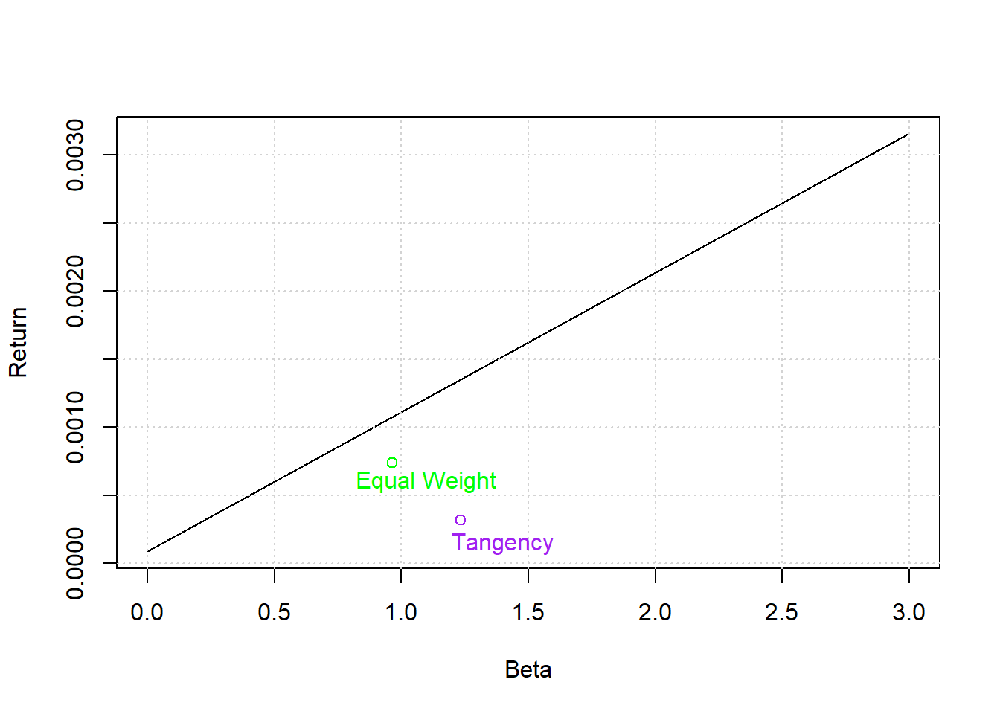
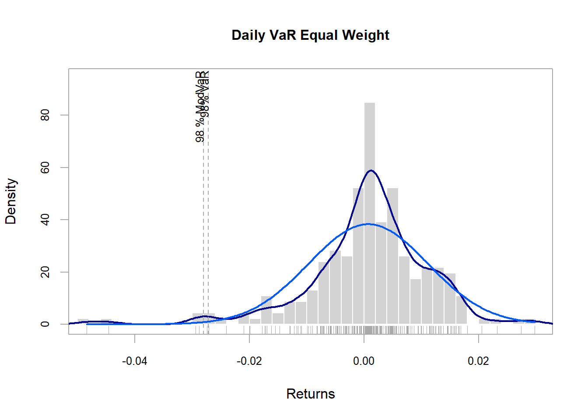
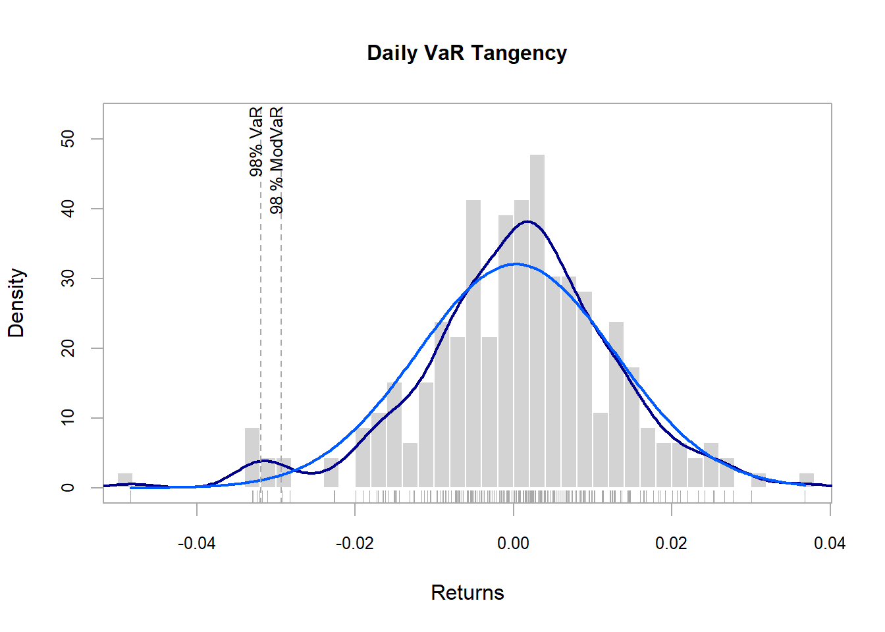
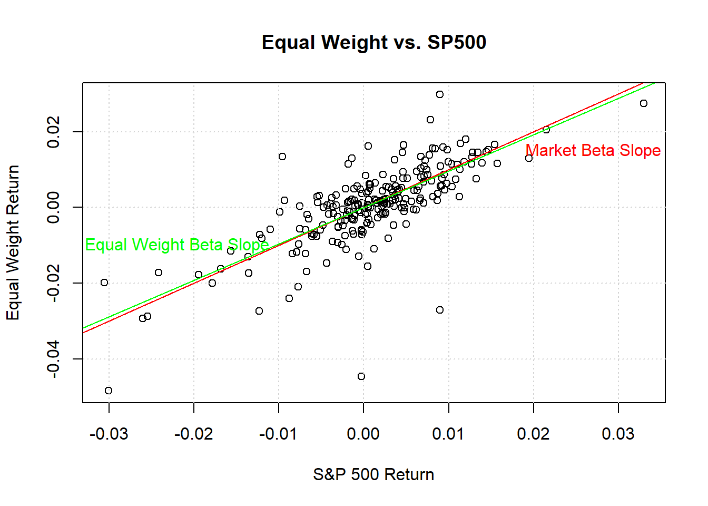
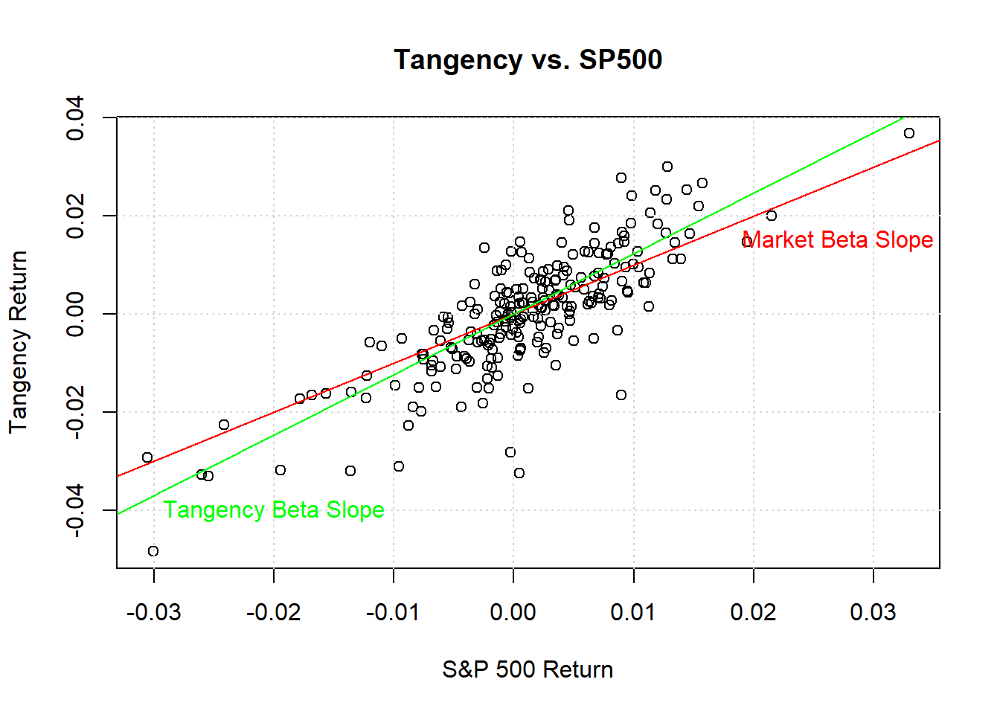
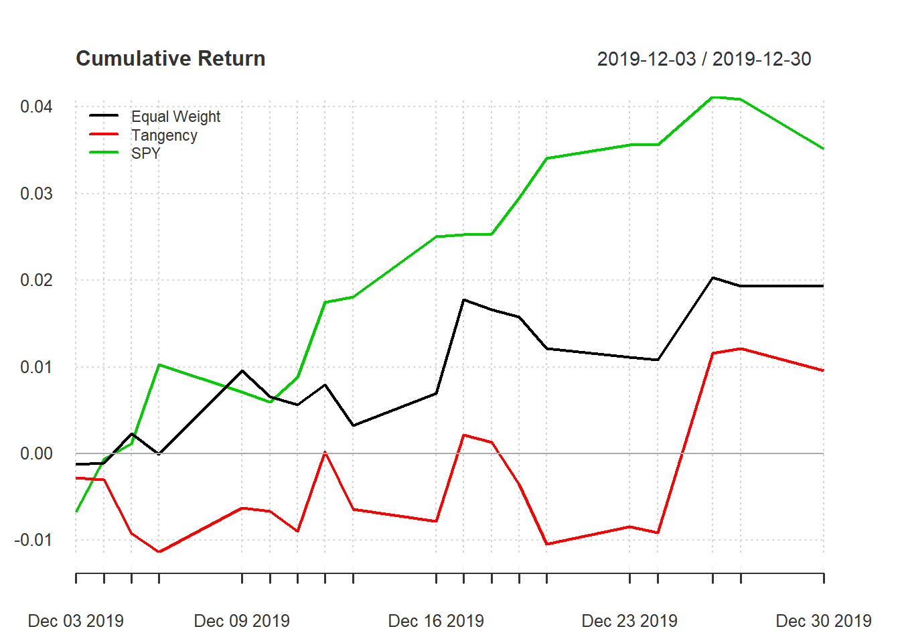
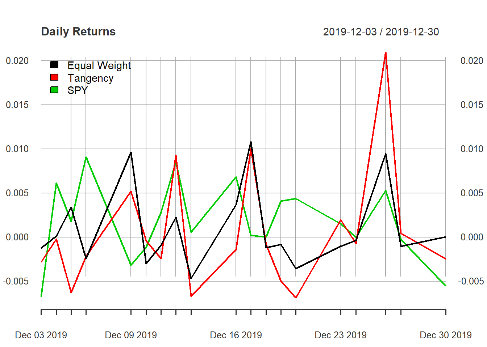

Quantmod; PerformanceAnalytics; PortfolioAnalytics; forecast; timeSeries
stocks <- c("AMZN", "JPM", "KSS", "CMG", "JNJ", "^TNX", "SPY")
start.date <- "2016-01-01"
end.date <- "2018-12-31"
stock.data <- getSymbols.yahoo(Symbols = stocks,
env = .GlobalEnv,
return.class = "xts",
index.class = "Date",
from = start.date,
to = end.date,
periodicity = "monthly")## pausing 1 second between requests for more than 5 symbols
## pausing 1 second between requests for more than 5 symbols
## pausing 1 second between requests for more than 5 symbolsmonthly.returns <- cbind.xts(ROC(AMZN$AMZN.Adjusted),
ROC(JPM$JPM.Adjusted),
ROC(KSS$KSS.Adjusted),
ROC(CMG$CMG.Adjusted),
ROC(JNJ$JNJ.Adjusted),
TNX$TNX.Adjusted/1200)#Convert to montly decimal data.
names(monthly.returns) <- stocks[1:6]; monthly.returns <- na.omit(monthly.returns)
head(round(monthly.returns,3))#Example data.## AMZN JPM KSS CMG JNJ ^TNX
## 2016-02-01 -0.061 -0.049 -0.064 0.117 0.007 0.001
## 2016-03-01 0.072 0.051 -0.001 -0.078 0.035 0.001
## 2016-04-01 0.105 0.065 -0.040 -0.112 0.035 0.002
## 2016-05-01 0.092 0.040 -0.206 0.049 0.005 0.002
## 2016-06-01 -0.010 -0.049 0.051 -0.093 0.081 0.001
## 2016-07-01 0.059 0.029 0.106 0.051 0.032 0.001chart.CumReturns(monthly.returns, wealth.index = TRUE, legend.loc = "topleft")#Total Returns of each asset.
I will construct and compare 2 different portfolios: Equal Weight and Tangency Portfolio.
#Equal Weight: 100% / 5 = 20%.
equal.weights <- c(0.2, 0.2, 0.2, 0.2, 0.2)
#Global Minimum Variance
#Tangency Portfolio
risk.free.rate <- mean(monthly.returns$`^TNX`)#Risk Free Rate to be used.
cov.mat <- cov(monthly.returns[,1:5]); round(cov.mat,3)# Variance Covariance Matrix.## AMZN JPM KSS CMG JNJ
## AMZN 0.006 0.001 0.000 0.002 0.001
## JPM 0.001 0.003 0.002 0.000 0.001
## KSS 0.000 0.002 0.009 0.000 -0.001
## CMG 0.002 0.000 0.000 0.009 -0.001
## JNJ 0.001 0.001 -0.001 -0.001 0.002risk.premium <- matrix(c(mean(monthly.returns$AMZN), #RP = ri - rf.
mean(monthly.returns$JPM),
mean(monthly.returns$KSS),
mean(monthly.returns$CMG),
mean(monthly.returns$JNJ)), ncol = 1) - risk.free.rate#rf
risk.premium# Risk Premium Matrix## [,1]
## [1,] 0.024877110
## [2,] 0.014466091
## [3,] 0.010137496
## [4,] -0.003334162
## [5,] 0.006373199tangency.weights <- solve(cov.mat, risk.premium)/sum(solve(cov.mat, risk.premium))#Solve for tangency point.
colnames(tangency.weights) <- "Weights"; round(tangency.weights, 3)## Weights
## AMZN 0.565
## JPM 0.348
## KSS 0.134
## CMG -0.150
## JNJ 0.103Graph Efficient frontier to see how the different portfolios lie relatively to each other.
#Generate Random Portfolio using PortfolioAnalytics package.
portfolio.generation <- portfolio.spec(stocks[1:5])#Add assets' names.
portfolio.generation <- add.constraint(portfolio.generation, type = "box", min = -1, max = 1)#Add constraints.
portfolio.generation <- add.constraint(portfolio = portfolio.generation, type = "full_investment")
random.portfolios <- random_portfolios(portfolio.generation, permutations = 2000, rp_method = "grid")## Warning: executing %dopar% sequentially: no parallel backend registeredportfolio.returns <- random.portfolios%*%(risk.premium+risk.free.rate)
portfolio.std <- c()#Create empty list to fill with portfolio standard deviations.
for(i in (1:nrow(random.portfolios))){
portfolio.std <- c(portfolio.std,(random.portfolios[i,]%*%cov.mat%*%matrix(c(random.portfolios[i,])))**(1/2))
}
equal.weights.std <- (equal.weights%*%cov.mat%*%matrix(c(equal.weights)))**(1/2)
equal.weights.return <- equal.weights%*%(risk.premium+risk.free.rate)
tangency.std <- (t(tangency.weights)%*%cov.mat%*%tangency.weights)**(1/2)
tangency.return <- t(tangency.weights)%*%(risk.premium+risk.free.rate)
plot(portfolio.std, portfolio.returns, col = "grey", xlab = "Std. Dev.", ylab = "Return", main = "Efficient Frontier", xlim = c(0,0.09), ylim = c(-.015, 0.03));grid(); points(c(0, equal.weights.std, tangency.std), c(risk.free.rate, equal.weights.return, tangency.return), col = c("red", "green", "purple")); points(diag(cov.mat)**(1/2), risk.premium+risk.free.rate, col = "blue"); text(c(0.01,0.02,0.05,0.07), c(0, 0.015, 0.027, 0.017), c("Risk Free Rate", "Equal Weights Portfolio", "Tangency Portfolio", "Individual Assets"), col = c("red", "green", "purple", "blue")); abline(risk.free.rate, ((tangency.return - risk.free.rate)/ tangency.std), col = "purple")# Graph function looks complicated as I added many features.
Need to download daily data - which will be data used from hereon.
start.date <- "2019-01-01"; end.date <- "2019-11-30"
stock.data <- getSymbols.yahoo(Symbols = stocks,
env = .GlobalEnv,
return.class = "xts",
index.class = "Date",
from = start.date,
to = end.date,
periodicity = "daily")## pausing 1 second between requests for more than 5 symbols## Warning: ^TNX contains missing values. Some functions will not work if
## objects contain missing values in the middle of the series. Consider using
## na.omit(), na.approx(), na.fill(), etc to remove or replace them.## pausing 1 second between requests for more than 5 symbols
## pausing 1 second between requests for more than 5 symbolsdaily.returns <- cbind.xts(ROC(AMZN$AMZN.Adjusted),
ROC(JPM$JPM.Adjusted),
ROC(KSS$KSS.Adjusted),
ROC(CMG$CMG.Adjusted),
ROC(JNJ$JNJ.Adjusted),
ROC(SPY$SPY.Adjusted))
daily.returns <- na.omit(daily.returns)#Remove any potential NAs.
names(daily.returns) <- c(stocks[1:5], stocks[7])
equal.weights.daily.return <- rowSums(daily.returns[,1:5]*0.2)
tangency.daily.return <- (daily.returns$AMZN*tangency.weights[1]
+ daily.returns$JPM*tangency.weights[2]
+ daily.returns$KSS*tangency.weights[3]
+ daily.returns$CMG*tangency.weights[4]
+ daily.returns$JNJ*tangency.weights[5])
portfolios.daily.return <- cbind.xts(equal.weights.daily.return, tangency.daily.return, daily.returns$SPY)
names(portfolios.daily.return) <- c("Equal Weight", "Tangency", "SPY")
head(round(portfolios.daily.return,3))#Example data.## Equal Weight Tangency SPY
## 2019-01-03 -0.017 -0.023 -0.024
## 2019-01-04 0.027 0.037 0.033
## 2019-01-07 0.023 0.012 0.008
## 2019-01-08 0.016 0.010 0.009
## 2019-01-09 0.001 0.001 0.005
## 2019-01-10 -0.005 -0.010 0.004chart.CumReturns(portfolios.daily.return, legend.loc = "topleft")#Graph cumulative return of each portfolio
#We can see that the tangency portfolio seriously underperform the market and only the euqal weight portfolio exceeded the market once in respect to returns. CAPM to be based on daily returns in 2019.
risk.free.daily.rate <- mean(na.omit(TNX$TNX.Adjusted)/(100*250))#250 trading days in 1 year
regression.equal.weight <- lm(portfolios.daily.return$`Equal Weight` ~ portfolios.daily.return$SPY,
data = portfolios.daily.return[, c("Equal Weight", "SPY")] -
risk.free.daily.rate)#Remove risk free rate from Port. and SPY returns.
summary(regression.equal.weight)#t-value is signifcant enough to reject the H0: beta = 0. However, the t-value for alpha is too small to conclude that Ha: a =/= 0.##
## Call:
## lm(formula = portfolios.daily.return$`Equal Weight` ~ portfolios.daily.return$SPY,
## data = portfolios.daily.return[, c("Equal Weight", "SPY")] -
## risk.free.daily.rate)
##
## Residuals:
## Min 1Q Median 3Q Max
## -0.044021 -0.003353 0.000082 0.003551 0.022908
##
## Coefficients:
## Estimate Std. Error t value Pr(>|t|)
## (Intercept) -0.0002745 0.0004569 -0.601 0.549
## portfolios.daily.return$SPY 0.9628256 0.0557582 17.268 <2e-16 ***
## ---
## Signif. codes: 0 '***' 0.001 '**' 0.01 '*' 0.05 '.' 0.1 ' ' 1
##
## Residual standard error: 0.006871 on 228 degrees of freedom
## Multiple R-squared: 0.5667, Adjusted R-squared: 0.5648
## F-statistic: 298.2 on 1 and 228 DF, p-value: < 2.2e-16confint(regression.equal.weight)#Confidence Interval.## 2.5 % 97.5 %
## (Intercept) -0.001174696 0.0006257821
## portfolios.daily.return$SPY 0.852958320 1.0726928164regression.tangency <- lm(portfolios.daily.return$Tangency ~ portfolios.daily.return$SPY,
data = portfolios.daily.return[, c("Tangency", "SPY")] -
risk.free.daily.rate)
summary(regression.tangency)#Both t-values are signifcant enough to reject the H0: beta = 0 and H0: a = 0.##
## Call:
## lm(formula = portfolios.daily.return$Tangency ~ portfolios.daily.return$SPY,
## data = portfolios.daily.return[, c("Tangency", "SPY")] -
## risk.free.daily.rate)
##
## Residuals:
## Min 1Q Median 3Q Max
## -0.032036 -0.004218 0.000211 0.004807 0.017646
##
## Coefficients:
## Estimate Std. Error t value Pr(>|t|)
## (Intercept) -0.0009824 0.0004885 -2.011 0.0455 *
## portfolios.daily.return$SPY 1.2336058 0.0596197 20.691 <2e-16 ***
## ---
## Signif. codes: 0 '***' 0.001 '**' 0.01 '*' 0.05 '.' 0.1 ' ' 1
##
## Residual standard error: 0.007347 on 228 degrees of freedom
## Multiple R-squared: 0.6525, Adjusted R-squared: 0.651
## F-statistic: 428.1 on 1 and 228 DF, p-value: < 2.2e-16confint(regression.tangency)#Confidence Interval.## 2.5 % 97.5 %
## (Intercept) -0.001944956 -1.978773e-05
## portfolios.daily.return$SPY 1.116129817 1.351082e+00Visually we can see that both portfolios’ returns do not provide enough returns for the amount of systematic risk taken on: therefore, following a market portfolio would be better in most instances (unless you are trying to hedge.)
plot(c(0,3), c(risk.free.daily.rate, mean(portfolios.daily.return$SPY)*3), type = "l", xlab = "Beta", ylab = "Return"); grid(); points(c(regression.equal.weight$coefficients[2], regression.tangency$coefficients[2]), c(mean(portfolios.daily.return$`Equal Weight`), mean(portfolios.daily.return$Tangency)), col = c("green", "purple"));text(c(1.1, 1.4), c(0.0006, 0.00015), c("Equal Weight", "Tangency"), col = c("green", "purple"))
Compare to a similarly diverse portfolio. For this comparison, I will use a large cap ETF from Vanguard: VV.
Vanguard <- getSymbols.yahoo(Symbols = c("VV"),
env = .GlobalEnv,
return.class = "xts",
index.class = "Date",
from = "2019-01-01",
to = "2019-11-30",
periodicity = "daily")
ratio.comparison.returns <- cbind.xts(portfolios.daily.return, na.omit(ROC(VV$VV.Adjusted)))#Combine data.
#USe functions from PerformanceAnalytics, except for CV Ratio.
#Create a matrix with all the ratios. Of course, one could have created a for loop or print each function individually.
comparison <- matrix(c(SharpeRatio(ratio.comparison.returns$Equal.Weight, Rf = risk.free.daily.rate)[1],#Create a matrix with all results.
SharpeRatio(ratio.comparison.returns$Tangency, Rf = risk.free.daily.rate)[1],
SharpeRatio(ratio.comparison.returns$SPY, Rf = risk.free.daily.rate)[1],
SharpeRatio(ratio.comparison.returns$VV.Adjusted, Rf = risk.free.daily.rate)[1],
TreynorRatio(ratio.comparison.returns$Equal.Weight, ratio.comparison.returns$SPY, Rf = risk.free.daily.rate),
TreynorRatio(ratio.comparison.returns$Tangency, ratio.comparison.returns$SPY, Rf = risk.free.daily.rate),
TreynorRatio(ratio.comparison.returns$SPY, ratio.comparison.returns$SPY, Rf = risk.free.daily.rate),
TreynorRatio(ratio.comparison.returns$VV.Adjusted, ratio.comparison.returns$SPY, Rf = risk.free.daily.rate),
SortinoRatio(ratio.comparison.returns$Equal.Weight, MAR = 0),
SortinoRatio(ratio.comparison.returns$Tangency, MAR = 0),
SortinoRatio(ratio.comparison.returns$SPY, MAR = 0),
SortinoRatio(ratio.comparison.returns$VV.Adjusted, MAR = 0),
StdDev(ratio.comparison.returns$Equal.Weight)/mean(ratio.comparison.returns$Equal.Weight),
StdDev(ratio.comparison.returns$Tangency)/mean(ratio.comparison.returns$Tangency),
StdDev(ratio.comparison.returns$SPY)/mean(ratio.comparison.returns$SPY),
StdDev(ratio.comparison.returns$VV.Adjusted)/mean(ratio.comparison.returns$VV.Adjusted)), ncol = 4)
rownames(comparison) <- c("Sharpe Ratio", "Treynor Ratio", "Sortino Ratio", "CV Ratio")
colnames(comparison) <- c("Equal Weight", "Tangency", "SPY", "VV")
comparison## Equal Weight Tangency SPY VV
## Sharpe Ratio 0.06262230 0.16883428 0.09495781 14.097985
## Treynor Ratio 0.01843943 0.03165768 0.03480802 39.371603
## Sortino Ratio 0.11860046 0.26483551 0.18541187 7.738210
## CV Ratio 0.11916917 0.26667409 0.18658272 7.705101This calculation can easily be done by using the VaR() function supplied by the PerformanceAnalytics Package.
VaR.comparison <- c()
VaR(ratio.comparison.returns, p = 0.02)## Equal.Weight Tangency SPY VV.Adjusted
## VaR -0.02803898 -0.02927947 -0.02030778 -0.02026966chart.Histogram(ratio.comparison.returns$Equal.Weight,#Plot Density of Returns.
breaks = 50, methods = c("add.density", "add.normal", "add.rug", "add.risk"), p =0.98, main = "Daily VaR Equal Weight")
chart.Histogram(ratio.comparison.returns$Tangency,#Plot Density of Returns. One with more data points may want to use more breaks.
breaks = 50, methods = c("add.density", "add.normal", "add.rug", "add.risk"), p =0.98, main = "Daily VaR Tangency")
Scatter Plot will have SPY on X-axis and the other portfolios on the Y-axis. Equal Weight Portfolio conforms quite nicely to the performance of SPY (this was expected due to a beta almost = 1).
#Use timeSeries() function to move away from XTS object that has predetermined properties in plot().
plot(timeSeries(ratio.comparison.returns$SPY), timeSeries(ratio.comparison.returns$Equal.Weight), ylab = "Equal Weight Return", xlab = "S&P 500 Return", main = "Equal Weight vs. SP500"); grid(); abline(0,1, col = "red"); abline(0, regression.equal.weight$coefficients[2], col = "green"); text(c(-.022,0.027),c(-.01,.015), c("Equal Weight Beta Slope", "Market Beta Slope"), col = c("green", "red"))
plot(timeSeries(ratio.comparison.returns$SPY), timeSeries(ratio.comparison.returns$Tangency), ylab = "Tangency Return", xlab = "S&P 500 Return", main = "Tangency vs. SP500"); grid(); abline(0,1, col = "red"); abline(0, regression.tangency$coefficients[2], col = "green"); text(c(-.02,0.027),c(-.04,.015), c("Tangency Beta Slope", "Market Beta Slope"), col = c("green", "red"))
Create Portfolio with 0 Systematic Risk using data of Portfolios and SPY 2019M1 - 2019M11. Easiest way to get a portfolio with 0 systematic risk is to take a short position in SPY - contrary, you may take a long position in SPY and then short the portfolio (+ = - and - = +). However, someone who wants to devote their time to find a portfolio with 0 systematic risk should search for quant-strategies, as you want to add value - otherwise, just invest in risk free assets.
We can see that we somewhat succeeded in reducing the systematic risk, given that our beta for each portfolio is close to 0 with a low t-value, suggesting that we fail to reject the H0: beta = 0.
start.date <- "2019-12-01"; end.date <- "2019-12-31"
stock.data <- getSymbols.yahoo(Symbols = stocks,
env = .GlobalEnv,
return.class = "xts",
index.class = "Date",
from = start.date,
to = end.date,
periodicity = "daily")## pausing 1 second between requests for more than 5 symbols## Warning: ^TNX contains missing values. Some functions will not work if
## objects contain missing values in the middle of the series. Consider using
## na.omit(), na.approx(), na.fill(), etc to remove or replace them.## pausing 1 second between requests for more than 5 symbols
## pausing 1 second between requests for more than 5 symbolsdaily.returns <- cbind.xts(ROC(AMZN$AMZN.Adjusted),
ROC(JPM$JPM.Adjusted),
ROC(KSS$KSS.Adjusted),
ROC(CMG$CMG.Adjusted),
ROC(JNJ$JNJ.Adjusted),
ROC(SPY$SPY.Adjusted))
regression.equal.weight$coefficients[2]/1## portfolios.daily.return$SPY
## 0.9628256equal.weights.daily.return <- rowSums(daily.returns[,1:5]*0.2)-daily.returns$SPY.Adjusted*(regression.equal.weight$coefficients[2])
# - = Short Position.
tangency.daily.return <- (daily.returns$AMZN*tangency.weights[1]
+ daily.returns$JPM*tangency.weights[2]
+ daily.returns$KSS*tangency.weights[3]
+ daily.returns$CMG*tangency.weights[4]
+ daily.returns$JNJ*tangency.weights[5]) - daily.returns$SPY.Adjusted*(regression.tangency$coefficients[2])
portfolios.daily.return <- cbind.xts(equal.weights.daily.return, tangency.daily.return, daily.returns$SPY)
names(portfolios.daily.return) <- c("Equal Weight", "Tangency", "SPY"); portfolios.daily.return <- na.omit(portfolios.daily.return)
head(portfolios.daily.return)## Equal Weight Tangency SPY
## 2019-12-03 -0.001228220 -0.0028117092 -0.006729265
## 2019-12-04 0.000133271 -0.0001867640 0.006151261
## 2019-12-05 0.003398431 -0.0062448826 0.001796365
## 2019-12-06 -0.002388067 -0.0021780910 0.009092683
## 2019-12-09 0.009642300 0.0052083405 -0.003149081
## 2019-12-10 -0.002961914 -0.0004024045 -0.001115673chart.CumReturns(portfolios.daily.return, legend.loc = "topleft", main = "Cumulative Return")
#Still underperformed the S&P500, but that was expected if S&P500 gained value during 2019M12.
plot(portfolios.daily.return, legend.loc = "topleft", main = "Daily Returns")
regression.equal.weight <- lm(portfolios.daily.return$`Equal Weight` ~ portfolios.daily.return$SPY,
data = portfolios.daily.return[, c("Equal Weight", "SPY")] -
risk.free.daily.rate)#Remove risk free rate from Port. and SPY returns.
regression.tangency <- lm(portfolios.daily.return$Tangency ~ portfolios.daily.return$SPY,
data = portfolios.daily.return[, c("Tangency", "SPY")] -
risk.free.daily.rate)#Remove risk free rate from Port. and SPY returns.
summary(regression.equal.weight); summary(regression.tangency)##
## Call:
## lm(formula = portfolios.daily.return$`Equal Weight` ~ portfolios.daily.return$SPY,
## data = portfolios.daily.return[, c("Equal Weight", "SPY")] -
## risk.free.daily.rate)
##
## Residuals:
## Min 1Q Median 3Q Max
## -0.005660 -0.002195 -0.001862 0.001786 0.009802
##
## Coefficients:
## Estimate Std. Error t value Pr(>|t|)
## (Intercept) 0.001008 0.001158 0.871 0.396
## portfolios.daily.return$SPY 0.006370 0.250352 0.025 0.980
##
## Residual standard error: 0.004634 on 17 degrees of freedom
## Multiple R-squared: 3.808e-05, Adjusted R-squared: -0.05878
## F-statistic: 0.0006474 on 1 and 17 DF, p-value: 0.98##
## Call:
## lm(formula = portfolios.daily.return$Tangency ~ portfolios.daily.return$SPY,
## data = portfolios.daily.return[, c("Tangency", "SPY")] -
## risk.free.daily.rate)
##
## Residuals:
## Min 1Q Median 3Q Max
## -0.008079 -0.003955 -0.001019 0.001030 0.019498
##
## Coefficients:
## Estimate Std. Error t value Pr(>|t|)
## (Intercept) 3.577e-05 1.725e-03 0.021 0.984
## portfolios.daily.return$SPY 2.678e-01 3.730e-01 0.718 0.483
##
## Residual standard error: 0.006905 on 17 degrees of freedom
## Multiple R-squared: 0.02943, Adjusted R-squared: -0.02767
## F-statistic: 0.5154 on 1 and 17 DF, p-value: 0.4826